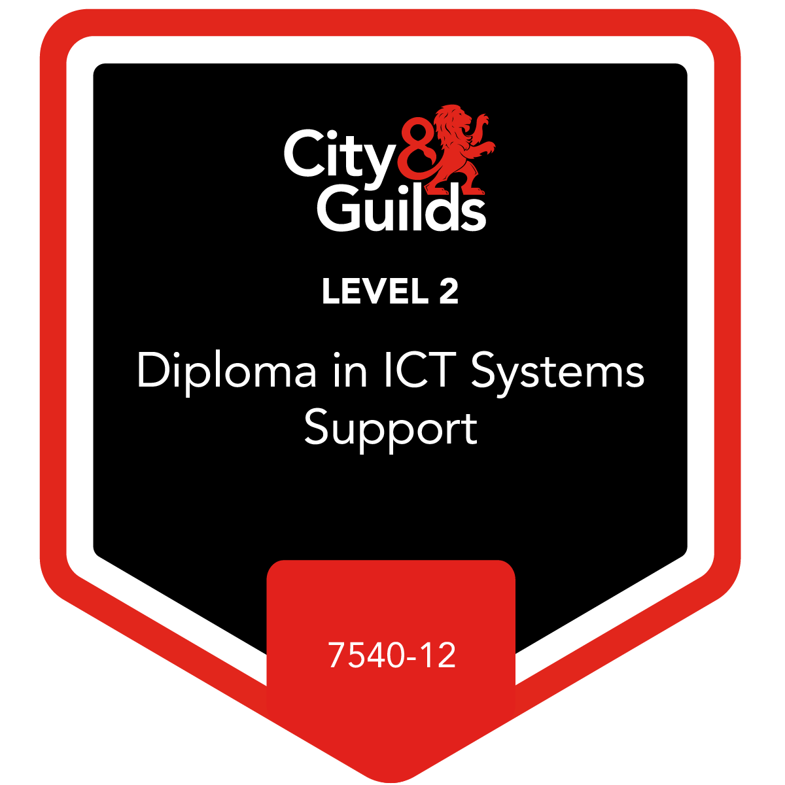

My Goals
I had been made redundant in September 2022 and have struggled to look
for work. But before I lost my job I had already started to think about
a new career path. Unfortunately my timing was a little off!
Once I had lost my job I immediately started to look for work in IT. I
thought it would be simple as I had acheived NVQs in Information
Technology (IT) and Business Administration, but clearly I was wrong.
Things have changed a little since I had gained those acheivements. And
also CV was the wrong type, which had clearly held me back.
I had to update my skills, first to update the IT skills and change my CV
into the appropriate type.
My main goal at this point is to secure a role within IT, ideally Web Development.
I know this won't be easy and straight forward, I've just picked up HTML
again after playing around with it 26 years ago. And I've also learned
very recently about CSS, which I've never used before, until my recent
course with Code Nation.
I have been provided the tools to help me acheive my initial goal of
becoming a Front-end Web Developer, and beyond if I so desire, and I
will get there. But as mentioned on the home page, my skills will be
translated onto this very site. You will be able to see the progress I
make right here as I continue to build it!
I probably need to add other goals, prior to acheiveing employment in my chosen field... There's a lot of learning to be done.
My Acheivements
Level 2 NCFE Certificate in Understanding Coding - Awaiting Result
CodeNation: November - December '24
- HTML (Hyper-Text Markup Language)
- CSS (Cascading Style Sheets)


City & Guilds Level 2 Diploma in ICT Systems Support
JBC Skills Training Limited: April - June '24
- Service Provision: Distinction.
- Install, Configure and Test ICT Networks: Distinction.
- Principles and Concepts of Cloud Computing: Distinction.
- Concepts for IT Professionals: Distinction.
- IT – Fundamentals – Networking.
- IT – Fundamentals – Software.
- IT – Fundamentals – Hardware.

Next steps:
- Get back into HTML.
- Familiarise myself further with CSS.
- Learn JavaScript.
The first two on this list are already at play as I need to use both HTML
and CSS for this site. And by recently merging two pages, this one and
'Journey', I had to be aware of what aspects I wanted to bring from the
other page and what to delete from this page for the merge to work.
- HTML (Hyper-Text Markup Language)
- CSS (Cascading Style Sheets)
City & Guilds Level 2 Diploma in ICT Systems Support
JBC Skills Training Limited: April - June '24- Service Provision: Distinction.
- Install, Configure and Test ICT Networks: Distinction.
- Principles and Concepts of Cloud Computing: Distinction.
- Concepts for IT Professionals: Distinction.
- IT – Fundamentals – Networking.
- IT – Fundamentals – Software.
- IT – Fundamentals – Hardware.
Next steps:
- Get back into HTML.
- Familiarise myself further with CSS.
- Learn JavaScript.
The first two on this list are already at play as I need to use both HTML and CSS for this site. And by recently merging two pages, this one and 'Journey', I had to be aware of what aspects I wanted to bring from the other page and what to delete from this page for the merge to work.